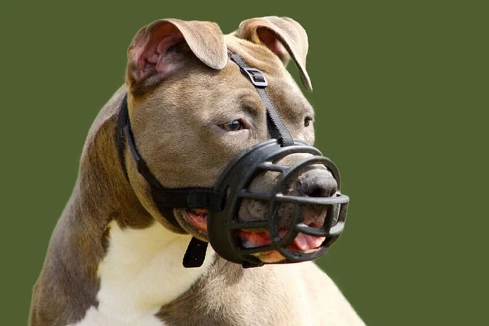

01 · Avant de lire
Lequel de ces chiens vous semble le plus dangereux ?
Cliquez sur un chien.
A · Berger malinois
La loi
Listé « dangereux » dans 6 règlements du Hainaut.
L'institution
Race de travail de la police et de l'armée.
B · Pit Bull Terrier
La loi
Présent dans les 21 règlements à liste de races.
La science
Scores d'agressivité envers les inconnus peu supérieurs à la moyenne, loin de sa réputation.
Duffy et al. 2008
C · Labrador
La loi
Cité dans aucun règlement.
La science
Parmi les trois races les plus impliquées dans les morsures soignées à l'hôpital en France, parce qu'il est très répandu.
Chaire BEA 2023
D · Chihuahua
La loi
Cité dans aucun règlement.
La science
Parmi les scores les plus élevés d'agressivité envers les inconnus.
Duffy et al. 2008
En résumé : Une race de chien, c'est bien plus que ce que l'on voit, ou ce que l'on pense savoir, au travers des médias.
02 · Le problème
La race prédit mal le comportement, mais elle organise nos décisions
Ce que l'on sait
- La variation est plus forte à l'intérieur d'une race qu'entre les races. Duffy et al. 2008 ; Hammond et al. 2022
- Les lois visant des races n'ont pas fait baisser les morsures. Creedon et Ó Súilleabháin 2017 ; Mills 2022
- La presse cite la race dans ses récits de morsure et privilégie les races déjà stigmatisées. Mouton et al. 2019 ; Montrose et al. 2020
- Les films font monter les achats d'une race pendant plusieurs années. Ghirlanda et al. 2014 ; Weir et Kessler 2022
- L'étiquette « pitbull » allonge le séjour en refuge. Nardulli 2018
Ce que l'on ne sait pas
- Comment ces significations se construisent-elles en Belgique ?
- Dans quel cadre ces influences s'appliquent-elles ?
- Ces signes, qui risquent de devenir des conventions, que changent-ils pour différentes races ?
- Toutes ces stigmatisations dans les médias influencent-elles le parcours des chiens en refuge ?
03 · Le cadre
La race comme signe
Dans le cadre de ma recherche, les outils sémiotiques que donnent Peirce ou Barthes sont importants. Ici, un chien, du moins sa race, serait mis en avant systématiquement sous un angle ou un autre ; comprendre en quoi ces angles et les mots utilisés impactent l'impression donnée est un atout de taille.

Lire l'image avec Peirce
-
Un chien du type Staffordshire ou pitbull a une tête large, des joues bien dessinées, un cou épais. Son pelage est court, bleu-fauve, avec un poitrail blanc.
Il a un regard calme. Ses oreilles sont naturelles et détendues. On voit sa langue parce qu’il halète. Le fond est vert, uni et neutre. Sa posture ne montre aucun signe d’agressivité.
On reconnaît la race seulement à partir de la morphologie. Pourtant, Nardulli (2018) montre que cette façon de reconnaître visuellement n'est pas fiable.
La race est déjà une interprétation, pas un fait.
-
La muselière est au centre. Elle fait penser à une règle qui s’applique à ce chien, ou laisse croire qu’il a déjà mordu ou qu’il pourrait mordre.
La muselière ne montre pas ce que le chien a fait. Elle montre seulement qu’on le considère comme dangereux.
Un passant ne voit pas la différence.
-
L'association « cette morphologie » et « une muselière » fait penser à « chien dangereux ». Pourtant, rien d’autre dans l’image ne le montre.
Ce sens n’est ni dans le chien ni dans l’objet.
Il vient d'une convention, des médias et de la loi.
Cliquez sur une étape pour voir la théorie et les preuves qui s'y rattachent.
04 · Un terrain déjà ouvert
Dans le Hainaut, le symbole est devenu règlement
J'ai relevé les règles sur les chiens « dangereux » des 69 communes de la province. Elles tiennent en 29 textes, communaux ou de zone de police.
Races citées, sur les 21 textes à liste
Une liste sans base légale
La liste de 13 races provient d'un arrêté ministériel du 21 octobre 1998, annulé par le Conseil d'État pour vice de procédure. Elle reste recopiée dans la moitié des textes.
UVCW, art. 1625
Un contre-exemple
Charleroi a supprimé sa liste en 2022 : « aucun fondement légal », selon l'échevine du Bien-être animal.
Télésambre, 1er juillet 2022
05 · Question et démarche
Ce que je veux comprendre, et comment
Comment les médias et la communication marketing, par les significations qu'ils attribuent aux races canines, orientent-ils le parcours des chiens selon leur race en Belgique ?
Sous-questions
- Quelles sont les races stigmatisées ou valorisées, et comment le sont-elles ?
- Comment ces signes atteignent-ils nos lois ?
- Cela laisse-t-il des traces en refuge ?
Volet qualitatif
Lire les signes
Corpus : publicités, articles de presse et règlements de police, analysés par l'analyse de discours et l'analyse sémiotique de l'image.
Volet quantitatif
Suivre les chiens en refuge
Données demandées aux refuges : entrées par race, motif, durée de séjour, issue (adoption, transfert, euthanasie).
Ath, La Louvière, Mariemont…
Mons, Charleroi, Botte du Hainaut…
06 · La fiche de proposition
Ce que contiendra ma fiche
Voici ce que contiendrait ma fiche de proposition.
1Raisons personnelles et scientifiques
2Enseignements de référence
Ce sujet couvre plusieurs enseignements, le cours de sémiotique donné en BA1 pose de fortes bases à ma recherche, ainsi que les cours de critique des sources, d'enjeux numériques de la communication, de déontologie de l'information et de la communication.
3Projet, cadre théorique et pertinence
Je pars d’une impression simple : certaines races arrivent en refuge en plus grand nombre et y restent plus longtemps. Certaines études montrent cet effet à une certaine échelle, comme celle de Nardulli (2018), qui indique que les Pit Bulls restent trois fois plus longtemps en refuge que leurs congénères. Cet effet peut venir d’un effet de mode : il a été démontré qu’un film peut faire grimper les inscriptions d’une race pendant plusieurs années (Ghirlanda et al. 2013, 2014 ; Herzog 2006). Mais il peut aussi venir de l’étiquette donnée à un chien, donc de la perception de sa race.
Ce que l’on sait aujourd’hui, c’est que la race n’est pas un bon prédicteur du comportement. Les variations comportementales sont bien plus observables au sein d’une race qu’entre les races ; bien que certains comportements soient plus typiques de certaines races, il ne s’agit pas de différences nettes (Hammond et al. 2022). Montrose et al. (2020) montrent qu’une race stigmatisée a plus de chances d’apparaître dans les journaux à la suite d’une attaque ; on parle alors de généralisation et de catastrophisme (Arluke et al. 2018).
Ce que l’on ignore en revanche, c’est l’impact général. En Belgique, très peu d’étude ont été faites, et elle porte sur les morsures, pas sur les médias ! Et les études existantes ailleurs décrivent les articles, mais cherchent peu à comprendre comment le sens se construit : un apport qui me paraît pourtant très pertinent. Enfin, personne n’a approfondi le passage de ces signes, des médias vers notre vision de ces races, ni l’influence que cela a sur leur parcours en refuge.
Ma question est alors la suivante : « Comment les médias et la communication marketing, par les significations qu’ils attribuent aux races canines, orientent-ils le parcours des chiens selon leur race en Belgique ? » Je suppute que certaines races sont systématiquement associées au danger, par la présence de symboles reconnus par la majorité, comme des muselières ou des chaînes, alors que d’autres races seraient immanquablement valorisées. J’avance également l’hypothèse que les races listées dans la loi, et stigmatisées dans les médias, seraient plus souvent « bloquées » en refuge pour une plus longue période, ou plus régulièrement euthanasiées faute d’adoptants. Ces impacts seraient aussi visibles dans la loi et par la loi, créée sous l’effet de l’opinion publique et perpétuant cette même opinion en la confirmant légalement.
Sur le plan théorique, plusieurs théoriciens avancent des idées pertinentes. Tout d’abord, sur la construction du sens, Peirce et Barthes. Le premier, avec sa théorie générale des signes, permet de voir un signe comme une triade : representamen, objet et interprétant ; le second décrit la création du mythe par la dénotation et la connotation. Ensuite, la circulation de ces signes s’expliquerait par la théorie de l’agenda-setting de McCombs et Shaw et par la théorie du cadrage d’Entman. Enfin, ces idées finissent par se figer, ce qui s’explique par la théorie du stigmate de Goffman et par celle de l’étiquetage de Becker.
Sur le plan de la pertinence, je pense mon projet utile pour combler le manque de recherche belge sur ce sujet, mais aussi parce qu’il permet d’appliquer la sémiotique aux relations entre humains et animaux. Socialement, sa pertinence tient au fait qu’il touche aux refuges saturés, aux euthanasies et à ce qui influe sur les choix d’adoption. Enfin, la pertinence communicationnelle se montre dans les effets concrets des mots et des images choisis par nos médias. Nardulli ouvre cette voie avec sa recherche sur le cadrage positif comme moyen de renverser une image.
4Méthodes
Pour le volet qualitatif, je partirais sur une analyse sémiotique et de discours. Pour ce faire, je constituerais un corpus en trois parties : publicitaire, médiatique et juridique. L’analyse de discours se faisant généralement sur peu de textes, il me faudra établir un échantillonnage raisonné sur une période délimitée. Des critères portant sur les médias choisis, les races visées et les mots-clés utilisés seront aussi définis pour assurer l’objectivité. Pour l’analyse des images et des textes, les théories de Barthes et de Peirce seront les plus utilisées ; encadrées par une grille identique pour tous les documents, elles permettront de reconnaître des récurrences. Des outils comme une grille d’analyse ou un logiciel de lexicométrie, pour repérer les concordances régulières, seront utilisés à cet effet.
Pour le volet quantitatif, ce sont des données chiffrées qu’il me faudra aller chercher. Il faudra demander aux refuges les entrées par race, les motifs d’entrée, la durée du séjour et son issue, sur une même période. Comparer les zones de police ayant mis en place des listes de races et celles n’en ayant pas démontrera les conventions que les lois renforcent ou influencent. Pour que ces données soient neutres, il faudra cependant tenir compte de la manière dont la race est déterminée : en effet, Nardulli a établi que la reconnaissance visuelle d’une race est peu fiable ; nous ne sommes pas bons en physionomie canine. De ce fait, il est important de prendre en compte la façon dont un chien est étiqueté. Faire le lien entre ces chiffres et les données qualitatives permettra de poser un lien défini.
Enfin, j’aimerais mener des entretiens semi-directifs auprès de responsables de refuge, de comportementalistes et, éventuellement, d’agents communaux. Le but serait de leur demander une interprétation des chiffres, et de voir s’il y a une corrélation entre leur discours, les demandes des adoptants et les signes trouvés dans les médias.
Bien que cela puisse sembler beaucoup, je pense ces méthodes réalisables dans l’année qui se présente.
5Accès aux données et au terrain
Le corpus juridique est accessible en ligne, comme je le démontre déjà avec la constitution du corpus juridique du Hainaut. Les recherches de règlements ont été faites de mon côté, mais une partie de l’analyse de ces textes a été réalisée avec l’aide de Claude.ai, afin de fluidifier l’avancée de ce projet.
Pour le corpus médiatique, les médias d’information belges devraient être accessibles grâce à une base de presse, telle qu’Europresse, qui permet de rechercher des articles par mots-clés et par période.
Enfin, pour le corpus publicitaire, de nombreux sites d’archives publicitaires existent ; il me faudra cependant m’assurer que les publicités repérées ont été diffusées en Belgique.
Les données de refuges, mes contacts existants me seront fort utiles afin d’obtenir ces chiffres, certainement en commençant par le Hainaut, en m’appuyant sur le corpus juridique déjà constitué comme premier cas. Pour les entretiens, de la même manière, mes contacts devraient m’aider à trouver des personnes qualifiées.
6Questions éthiques
Les données collectées devront être traitées dans le respect du RGPD. Ayant moi-même travaillé en refuge, je ne suis pas dans une posture de neutralité totale : il me faudra veiller à ne pas orienter mes questions dans le sens de ce que je pense déjà.
En documentant la manière dont certaines races sont stigmatisées, je prends le risque de renforcer malgré moi les représentations que je cherche à déconstruire.
Certains sujets (euthanasie, abandons, maltraitance) devront être abordés avec tact.
Enfin, si mon échantillon n’est pas représentatif, il serait malhonnête de présenter mes conclusions comme généralisables
7Bibliographie de départ
Plus de 30 références lues et fichées. Les sept qui portent l'argument présent sont listées en bas de page.
07 · Pourquoi vous
Accepteriez-vous de diriger ce mémoire, ou d'en discuter lors d'un rendez-vous ?
Je pense que vous êtes la personne la plus qualifiée pour m'accompagner, du fait de vos connaissances en sémiotique et du cadre de ma recherche.